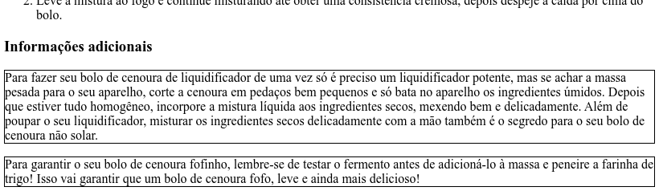
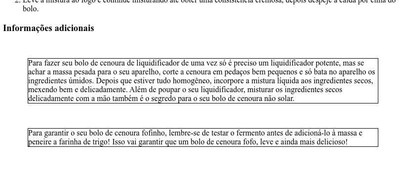
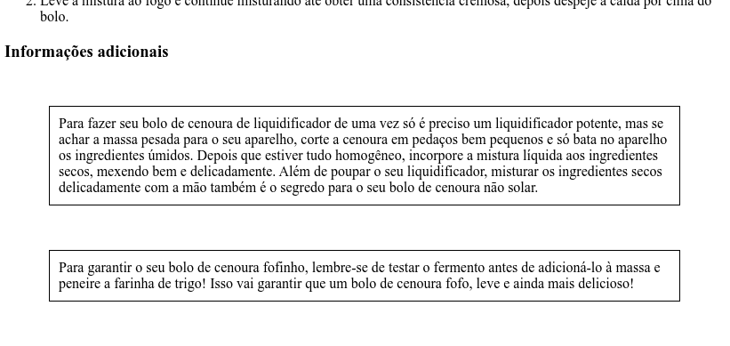

CSS 1: Anatomia
Antes de aprender a voar, precisamos aprender a andar. Antes de aprender a andar, precisamos aprender a engatinhar. E, antes de conhecer as propriedades avançadas do CSS, precisamos aprender algumas propriedades básicas.
Propriedades de borda
Todo elemento de um documento HTML tem uma borda. Não percebemos isso até agora porque as regras de formatação padrão dos navegadores tornam essa borda invisível na maioria dos elementos. Vamos mudar isso!
Mais especificamente, vamos adicionar ao arquivo style.css que vocês criaram
na parte anterior um bloco que aplica propriedades sobre
elementos de nome p.
p {
border-width: 1px;
border-style: solid;
border-color: black;
}A primeira propriedade estabelece que a espessura da borda é 1 pixel. A segunda propriedade estabelece que o estilo da borda é sólido (existem outros estilos disponíveis, como tracejado). A terceira propriedade estabelece que a cor da borda é preta.
Salve style.css no editor e atualize bolodecenoura.html no navegador para confirmar que essas propriedades foram, de fato, aplicadas.

Legal! Além de servir como exemplo, essas bordas vão servir como auxílio visual para ajudar a entender as próximas propriedades.
Dimensões de margin
A margem de um elemento é o espaçamento que esse elemento tem "para fora" da borda. Como todo elemento é retangular, podemos dividir esse espaçamento em quatro partes: cima, direita, baixo e esquerda.
As regras de formatação padrão dos navegadores tornam essa margem zero na
maioria dos elementos. Vamos mudar isso adicionando mais algumas linhas ao bloco
que começamos a escrever acima. Aliás, vamos aproveitar a oportunidade para
mencionar que comentários em CSS devem ser escritos entre /* e */.
p {
border-width: 1px;
border-style: solid;
border-color: black;
/* novas linhas */
margin-top: 50px;
margin-right: 50px;
margin-bottom: 50px;
margin-left: 50px;
}Salve style.css e atualize bolodecenoura.html para confirmar que essas linhas criam um espaçamento de 50 pixels em volta dos parágrafos.

Dimensões de padding
O padding de um elemento é o espaçamento que esse elemento tem "para dentro" da borda. Ou seja, o espaçamento entre sua borda e seu conteúdo. Também podemos dividir esse espaçamento em cima, direita, baixo e esquerda.
p {
border-width: 1px;
border-style: solid;
border-color: black;
margin-top: 50px;
margin-right: 50px;
margin-bottom: 50px;
margin-left: 50px;
/* novas linhas */
padding-top: 10px;
padding-right: 10px;
padding-bottom: 10px;
padding-left: 10px;
}Salve style.css e atualize bolodecenoura.html para confirmar que essas linhas criam um espaçamento de 10 pixels entre a borda e o conteúdo dos parágrafos.

Repare, aliás, em como isso melhorou a legibilidade.
A tríade border-margin-padding representa a "anatomia básica" de um
elemento HTML. É muito importante dominar essas três propriedades, pois elas são
essenciais para o posicionamento preciso dos elementos.
Agora que já falamos de algumas propriedades básicas, podemos falar de alguns seletores básicos. Mas antes...
Propriedades de conveniência
Muitas das propriedades do CSS são de conveniência, ou seja, elas não precisam existir mas facilitam a vida porque permitem definir o valor de múltiplas propriedades de uma vez.
Por exemplo, as três propriedades
border-width: 1px;
border-style: solid;
border-color: black;podem ser substituídas pela única propriedade
border: 1px solid black;que define os três valores de uma vez.
Da mesma forma, as propriedades
margin-top: 50px;
margin-right: 50px;
margin-bottom: 50px;
margin-left: 50px;
padding-top: 10px;
padding-right: 10px;
padding-bottom: 10px;
padding-left: 10px;podem ser substituídas pelas propriedades
margin: 50px 50px 50px 50px;
padding: 10px 10px 10px 10px;que definem os quatro valores de uma vez. A ordem dos valores é a mesma da primeira versão do código: cima, direita, baixo e esquerda. Essa ordem pode parecer estranha à primeira vista, mas é baseada no sentido horário. Pense em cima como 12h, direita como 3h, baixo como 6h e esquerda como 9h.
Aliás, essas duas propriedades podem ser ainda mais convenientes, pois na verdade aceitam qualquer quantidade de valores entre um e quatro:
-
se tem três valores, por exemplo
margin: 50px 50px 50px, o primeiro é aplicado à margem de cima, o segundo é aplicado tanto à margem da direita quanto à margem da esquerda e o terceiro é aplicado à margem de baixo; -
se tem dois valores, por exemplo
margin: 50px 50px, o primeiro é aplicado tanto à margem de cima quanto à margem de baixo e o segundo é aplicado tanto à margem da direita quanto à margem da esquerda; -
se tem apenas um valor, por exemplo
margin: 50px, esse valor é aplicado a todas as margens.
Assim, o código que escrevemos aqui pode ser resumido em um bloco super compacto.
p {
border: 1px solid black;
margin: 50px;
padding: 10px;
}Agora estamos prontos para a próxima parte.